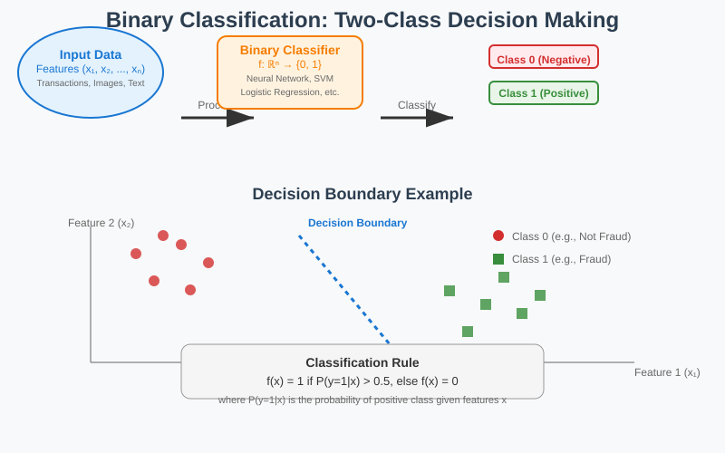
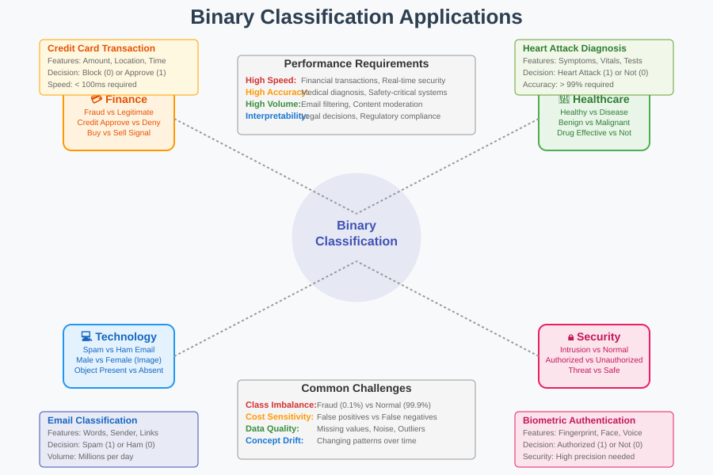
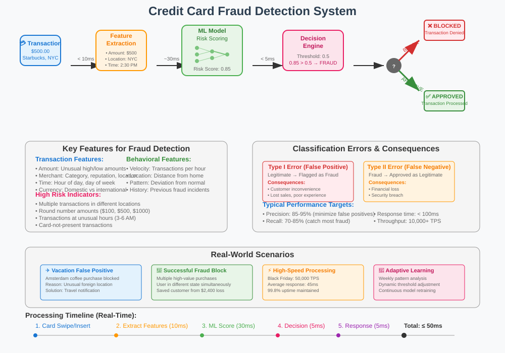
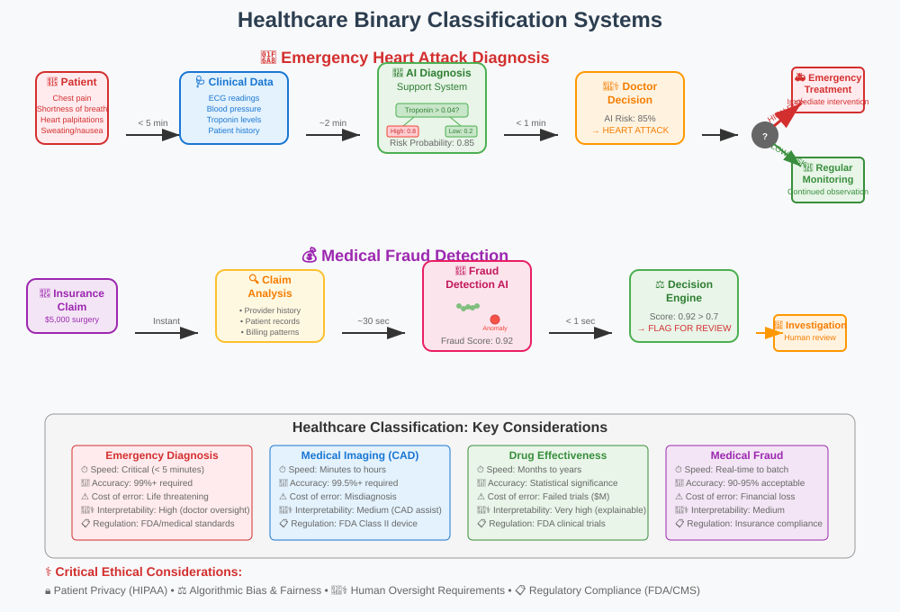
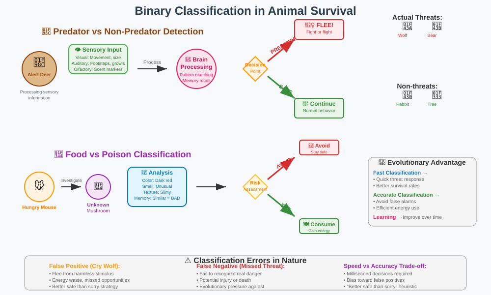
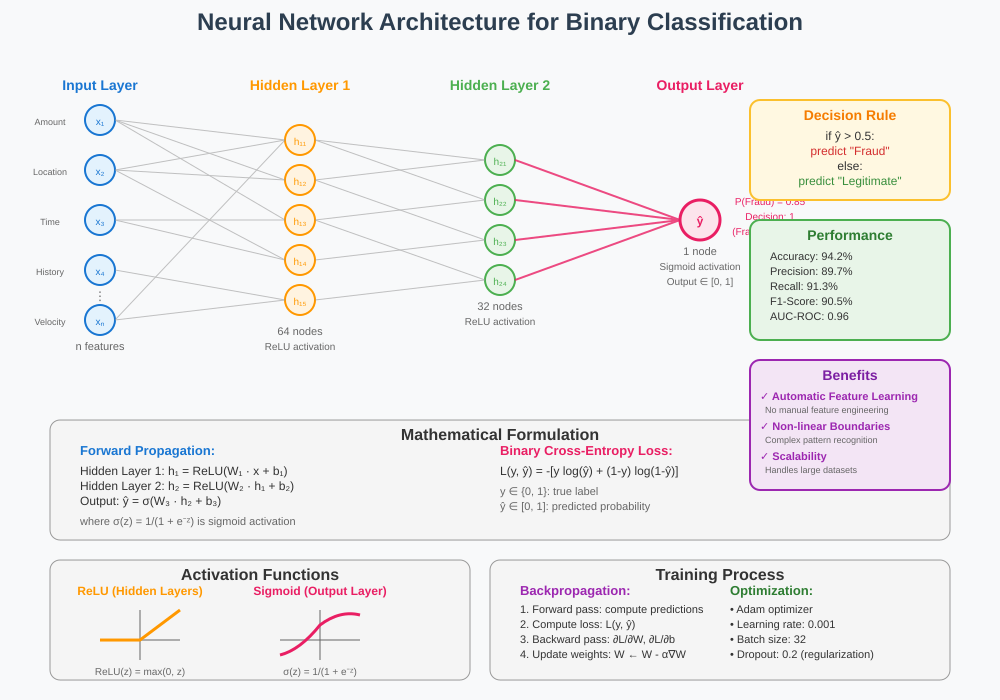

Binary Classification: From Fraud Detection to Neural Networks
Binary classification is one of the fundamental problems in machine learning and artificial intelligence, where the goal is to categorize data points into one of two distinct classes. This comprehensive guide explores the concepts, applications, and methodologies behind binary classification systems.
🧭 Quick Navigation
- What is Binary Classification?
- Real-World Applications
- Credit Card Fraud Detection
- Healthcare Applications
- Speed vs Accuracy Trade-offs
- Biological and Historical Perspectives
- Neural Network Approach
- Implementation Examples
- References & Further Reading
What is Binary Classification?
Binary classification is a supervised learning task that involves predicting which of two possible categories an input belongs to. The algorithm learns from labeled training data to make predictions on new, unseen data.

Key Characteristics
- Two Classes Only: The output is always one of exactly two possible categories
- Decision Boundary: Algorithms create a boundary that separates the two classes
- Probabilistic Output: Many algorithms provide confidence scores for predictions
- Feature-Based: Decisions are made based on input features or attributes
Mathematical Formulation
Given a feature vector x ∈ ℝⁿ, we want to learn a function f: ℝⁿ → {0, 1} such that:
f(x) = {
1 if x belongs to class 1 (positive class)
0 if x belongs to class 0 (negative class)
}
The goal is to minimize the classification error:
Error = P(f(x) ≠ y)
where y is the true class label.
Real-World Applications
Binary classification problems are ubiquitous in our daily lives and across various industries. Here are some common examples:
Technology & Communication
- Email Filtering: Spam vs. Not-Spam
- Content Moderation: Appropriate vs. Inappropriate content
- Image Recognition: Object present vs. Object absent
Finance & Business
- Credit Approval: Approve vs. Deny
- Market Prediction: Buy vs. Sell signals
- Customer Segmentation: High-value vs. Low-value customers
Healthcare & Medicine
- Disease Diagnosis: Healthy vs. Diseased
- Drug Testing: Effective vs. Ineffective
- Medical Imaging: Benign vs. Malignant tumors
Security & Safety
- Intrusion Detection: Normal vs. Suspicious activity
- Quality Control: Pass vs. Fail inspection
- Biometric Authentication: Authorized vs. Unauthorized

Credit Card Fraud Detection
One of the most critical applications of binary classification is in financial fraud detection. Credit card companies process millions of transactions daily and must make split-second decisions about transaction legitimacy.

The Challenge
Consider this scenario: You're traveling to Amsterdam and try to buy coffee at Schiphol Airport, but your card is declined due to suspected fraud. Later, when someone actually tries to use your card fraudulently in New Jersey while you're in Toronto, the system correctly blocks the transaction.
This illustrates the two types of errors in binary classification:
Error Types
Type I Error (False Positive): - Legitimate transaction flagged as fraud - Result: Customer inconvenience, lost sales
Type II Error (False Negative): - Fraudulent transaction approved - Result: Financial loss, security breach
Key Features for Fraud Detection
# Common features used in fraud detection
features = [
'transaction_amount',
'time_of_day',
'location',
'merchant_category',
'days_since_last_transaction',
'average_transaction_amount',
'velocity_checks',
'device_fingerprint'
]
Decision Process
The system must balance:
Speed: Decisions made in milliseconds during payment processing
Accuracy: Minimizing both false positives and false negatives
Cost: Weighing the cost of blocking legitimate transactions vs. allowing fraud
Healthcare Applications
Binary classification plays a crucial role in medical diagnosis and treatment decisions, where accuracy can be a matter of life and death.

Emergency Medical Diagnosis
Consider a patient arriving at an emergency room with symptoms including: - Chest pain - Shortness of breath - Heart palpitations - Sweating
The medical team must quickly determine: Heart Attack vs. Not Heart Attack
Critical Factors
Time Sensitivity: Decisions must be made rapidly in life-threatening situations
Feature Complexity: Multiple symptoms, vital signs, and test results must be considered
Uncertainty Management: Medical diagnosis often involves incomplete information
Medical Fraud Detection
Another healthcare application involves detecting fraudulent medical claims:
Legitimate Claim vs. Fraudulent Claim
Characteristics of potential fraud: - Non-existent patients - Fake services - Unusual billing patterns - Geographic inconsistencies
Model Validation in Healthcare
Healthcare applications require rigorous validation:
# Typical performance metrics for medical classification
metrics = {
'sensitivity': 0.95, # True positive rate (recall)
'specificity': 0.90, # True negative rate
'precision': 0.88, # Positive predictive value
'f1_score': 0.91, # Harmonic mean of precision and recall
'auc_roc': 0.94 # Area under ROC curve
}
Speed vs Accuracy Trade-offs
Different applications have varying requirements for speed and accuracy, leading to different architectural choices and optimization strategies.
Real-time Applications
Credit Card Processing: - Decision time: < 100 milliseconds - Acceptable accuracy: 95-98% - Cost of delay: Transaction timeout
Emergency Medical Diagnosis: - Decision time: < 5 minutes - Required accuracy: > 99% - Cost of delay: Patient life
Batch Processing Applications
Medical Imaging Analysis: - Decision time: Hours or days - Required accuracy: > 99.9% - Cost of error: Misdiagnosis
Optimization Strategies
Model Complexity: Simpler models (logistic regression) vs. complex models (deep neural networks)
Feature Engineering: Pre-computed features vs. real-time feature extraction
Ensemble Methods: Multiple models voting vs. single model prediction
# Speed-accuracy trade-off example
algorithms = {
'logistic_regression': {
'speed': 'Very Fast',
'accuracy': 'Good',
'interpretability': 'High'
},
'random_forest': {
'speed': 'Fast',
'accuracy': 'Very Good',
'interpretability': 'Medium'
},
'deep_neural_network': {
'speed': 'Slow',
'accuracy': 'Excellent',
'interpretability': 'Low'
}
}
Biological and Historical Perspectives
Binary classification is not a modern invention—it's a fundamental survival mechanism that has existed throughout history and across species.

Animal Kingdom
Animals constantly make binary classification decisions:
Predator vs. Not Predator: When encountering another creature, animals must instantly classify the threat level
Food vs. Not Food: Distinguishing between edible and toxic substances
Mate vs. Not Mate: Species recognition for reproduction
Neural Processing
In nature, binary classification is solved by biological neural networks:
- Visual cortex processes shapes, colors, and movement patterns
- Olfactory system analyzes chemical signatures
- Auditory processing identifies sound patterns
- Memory systems compare current input to past experiences
Historical Human Applications
Humans have long faced binary classification challenges:
Ancient Times: - Friend vs. Enemy - Safe vs. Dangerous (food, shelter, weather) - Fertile vs. Infertile (land, livestock)
Legal Systems: - Guilty vs. Not Guilty - Evidence: Valid vs. Invalid - Witness: Credible vs. Not Credible
Note: Historical legal systems like the Salem Witch Trials demonstrate how binary classification can fail catastrophically when based on prejudice rather than evidence.
Evolutionary Advantage
The ability to quickly and accurately perform binary classification provided significant survival advantages:
- Faster decision-making in threatening situations
- Resource optimization through better food/shelter selection
- Social cooperation through friend/foe identification
- Reproductive success through mate selection
Neural Network Approach
Neural networks provide a powerful approach to binary classification, loosely inspired by biological neural processing.

Architecture Overview
A typical binary classification neural network consists of:
Input Layer: Receives feature vectors - Neurons equal to number of features - Each neuron represents one input dimension
Hidden Layers: Process and transform features - Multiple layers for complex pattern recognition - Activation functions introduce non-linearity
Output Layer: Single neuron for binary decision - Sigmoid activation for probability output - Outputs value between 0 and 1
Mathematical Foundation
Forward Propagation:
For a simple network with one hidden layer:
z₁ = W₁x + b₁
a₁ = σ(z₁)
z₂ = W₂a₁ + b₂
ŷ = σ(z₂)
Where:
- W₁, W₂ are weight matrices
- b₁, b₂ are bias vectors
- σ is the sigmoid activation function
- x is the input vector
- ŷ is the predicted probability
Loss Function (Binary Cross-Entropy):
L(y, ŷ) = -[y log(ŷ) + (1-y) log(1-ŷ)]
Backpropagation optimizes weights to minimize loss using gradient descent.
Advantages of Neural Networks
Automatic Feature Learning: No need for manual feature engineering
Non-linear Decision Boundaries: Can learn complex patterns
Scalability: Handles large datasets effectively
Flexibility: Adaptable architecture for different problems
Implementation Considerations
# Key hyperparameters for binary classification
hyperparameters = {
'learning_rate': 0.001,
'batch_size': 32,
'hidden_units': [64, 32, 16],
'dropout_rate': 0.2,
'epochs': 100,
'activation': 'relu',
'output_activation': 'sigmoid',
'loss': 'binary_crossentropy',
'optimizer': 'adam'
}
Implementation Examples
Let's explore practical implementations of binary classification systems using modern machine learning frameworks.
Example 1: Credit Card Fraud Detection

import pandas as pd
import numpy as np
from sklearn.model_selection import train_test_split
from sklearn.preprocessing import StandardScaler
from sklearn.linear_model import LogisticRegression
from sklearn.ensemble import RandomForestClassifier
from sklearn.metrics import classification_report, roc_auc_score
# Load and preprocess data
def preprocess_transaction_data(df):
"""Preprocess credit card transaction data"""
# Feature engineering
df['hour'] = pd.to_datetime(df['timestamp']).dt.hour
df['amount_log'] = np.log1p(df['amount'])
df['velocity_1h'] = df.groupby('user_id')['amount'].rolling('1H').count()
# Categorical encoding
df = pd.get_dummies(df, columns=['merchant_category'])
return df
# Model training
def train_fraud_detection_model(X_train, y_train):
"""Train multiple models and compare performance"""
models = {
'Logistic Regression': LogisticRegression(random_state=42),
'Random Forest': RandomForestClassifier(n_estimators=100, random_state=42)
}
results = {}
for name, model in models.items():
model.fit(X_train, y_train)
y_pred = model.predict(X_test)
y_prob = model.predict_proba(X_test)[:, 1]
results[name] = {
'auc_score': roc_auc_score(y_test, y_prob),
'classification_report': classification_report(y_test, y_pred)
}
return models, results
Example 2: Medical Diagnosis System

import tensorflow as tf
from tensorflow.keras.models import Sequential
from tensorflow.keras.layers import Dense, Dropout, BatchNormalization
from tensorflow.keras.optimizers import Adam
def create_medical_diagnosis_model(input_dim):
"""Create neural network for medical diagnosis"""
model = Sequential([
Dense(128, activation='relu', input_dim=input_dim),
BatchNormalization(),
Dropout(0.3),
Dense(64, activation='relu'),
BatchNormalization(),
Dropout(0.2),
Dense(32, activation='relu'),
Dropout(0.1),
Dense(1, activation='sigmoid') # Binary classification
])
model.compile(
optimizer=Adam(learning_rate=0.001),
loss='binary_crossentropy',
metrics=['accuracy', 'precision', 'recall']
)
return model
# Custom metric for medical applications
def sensitivity_specificity_metrics(y_true, y_pred):
"""Calculate sensitivity and specificity"""
tp = np.sum((y_true == 1) & (y_pred == 1))
tn = np.sum((y_true == 0) & (y_pred == 0))
fp = np.sum((y_true == 0) & (y_pred == 1))
fn = np.sum((y_true == 1) & (y_pred == 0))
sensitivity = tp / (tp + fn) # Recall
specificity = tn / (tn + fp)
return sensitivity, specificity
Example 3: Real-time Classification Service
from flask import Flask, request, jsonify
import joblib
import numpy as np
app = Flask(__name__)
# Load pre-trained model
model = joblib.load('trained_binary_classifier.pkl')
scaler = joblib.load('feature_scaler.pkl')
@app.route('/predict', methods=['POST'])
def predict():
"""Real-time prediction endpoint"""
try:
# Parse input data
data = request.json
features = np.array(data['features']).reshape(1, -1)
# Preprocess
features_scaled = scaler.transform(features)
# Predict
probability = model.predict_proba(features_scaled)[0, 1]
prediction = 1 if probability > 0.5 else 0
response = {
'prediction': int(prediction),
'probability': float(probability),
'confidence': abs(probability - 0.5) * 2
}
return jsonify(response)
except Exception as e:
return jsonify({'error': str(e)}), 400
if __name__ == '__main__':
app.run(debug=True)
Performance Comparison
| Algorithm | Training Time | Prediction Time | Accuracy | Interpretability |
|---|---|---|---|---|
| Logistic Regression | Very Fast | Very Fast | 85-90% | High |
| Random Forest | Fast | Fast | 88-93% | Medium |
| SVM | Medium | Fast | 86-91% | Low |
| Neural Network | Slow | Fast | 90-95% | Very Low |
| Ensemble Methods | Very Slow | Medium | 92-97% | Low |
📚 References & Further Reading
Research Papers
- "A Few Useful Things to Know About Machine Learning" - Pedro Domingos (2012)
- "Deep Learning for Binary Classification" - Comprehensive survey of neural approaches
- "Fraud Detection: A Systematic Literature Review" - Recent advances in fraud detection systems
Books & Resources
- "Pattern Recognition and Machine Learning" - Christopher Bishop
- "The Elements of Statistical Learning" - Hastie, Tibshirani & Friedman
- "Hands-On Machine Learning" - Aurélien Géron
Online Resources & Models
- Hugging Face Binary Classification Models - Pre-trained models
- Scikit-learn Classification Guide - Comprehensive tutorials
Datasets for Practice
- Credit Card Fraud Detection: Kaggle Dataset
- Medical Diagnosis: UCI ML Repository
- Spam Detection: Enron Email Dataset
This documentation provides a comprehensive foundation for understanding and implementing binary classification systems. For hands-on practice, explore the provided Colab notebooks and experiment with the code examples.